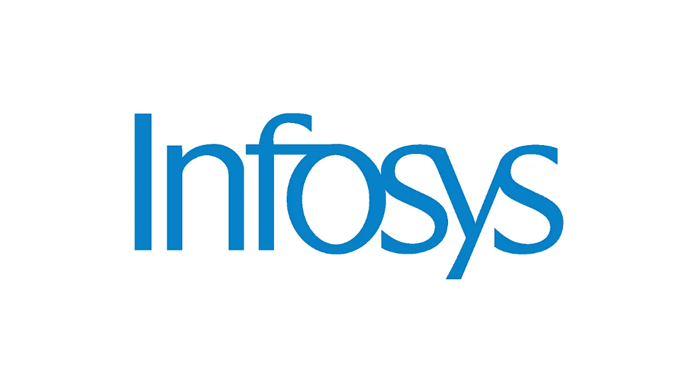

Infosys Off Campus Drive for Specialist Programmer and Digital Specialist Engineer | Software Engineer
Infosys Off Campus Drive for Specialist Programmer and Digital Specialist Engineer | Apply Now!
Infosys has announced a job notification for the post of Specialist Programmer and Digital Specialist Engineer. A student from Any discipline can apply for Infosys Recruitment 2022. Interested and eligible candidates can read more details below.

| Infosys Recruitment 2022 | |||
|---|---|---|---|
| 1 | Company name | Infosya | |
| 2 | Post Name | Specialist Programmer and Digital Specialist Engineer | |
| 3 | Salary | 6.25 - 8 LPA | |
| 4 | Experience | 0-1 Year | |
| 5 | Job Location | Across India | |
| 6 | Batch | 2022 | |
Eligibility Criteria:
▪︎ BE, BTech, ME, MTech, MCA, MSc (5 years integrated)
▪︎ Graduates from the 2022 batch only from any stream are eligible to apply
Compensation:
▪︎ The compensation for the Specialist Programmer role is IN 8 lakhs per annum and for the Digital Specialist Engineer role it is INR 6.25 lakhs per annum.
Selection Process:
▪︎ The selection process for these roles will be conducted online in two steps: Infosys online test and virtual interview.
About Infosys :
Infosys Limited is an Indian multinational information technology company that provides business consulting, information technology, and outsourcing services. The company was founded in Pune and is headquartered in Bangalore.
How to Apply for Infosys Recruitment 2022?
▪︎ Interested and Eligible candidates can apply for this drive online by scrolling down and clicking on Apply HERE.